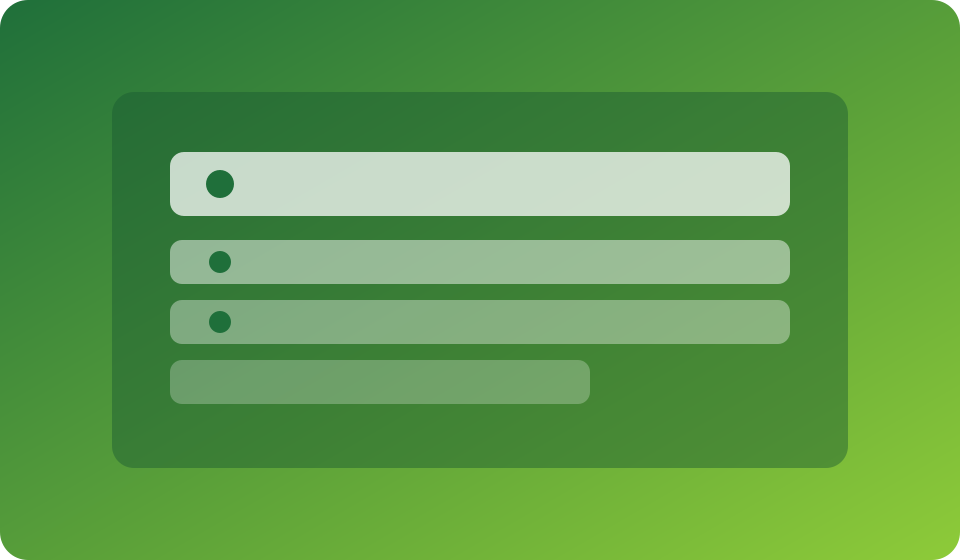
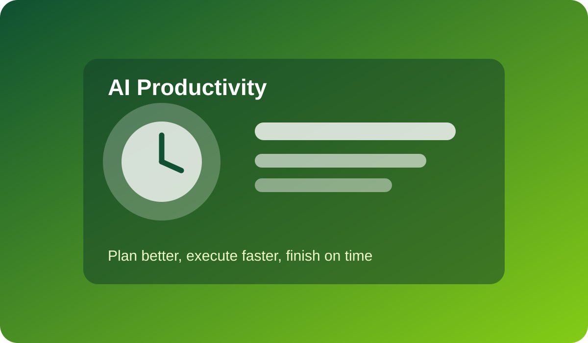
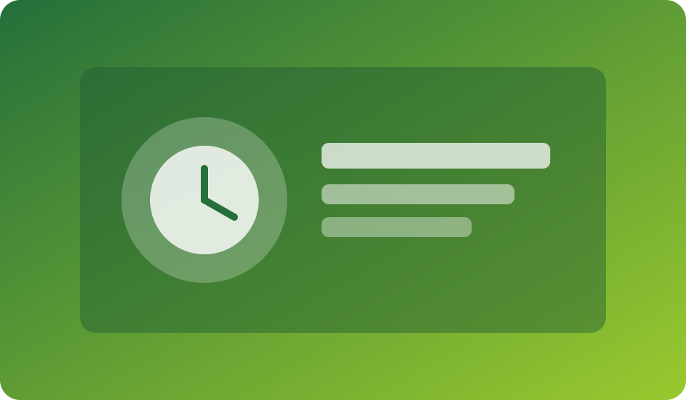

AI Planning Stack
Design a day-to-day planning flow that keeps priorities clear and execution focused.
Live Webinar Class
Create a personal AI operating system for better execution, prioritization, and deep work.


Design a day-to-day planning flow that keeps priorities clear and execution focused.

Create uninterrupted focus blocks and weekly review loops powered by smart AI assistance.
Perfect for managers, remote workers, entrepreneurs, and students handling multiple responsibilities. After this class, you will run a clear, low-stress productivity system that helps you finish more important work consistently.